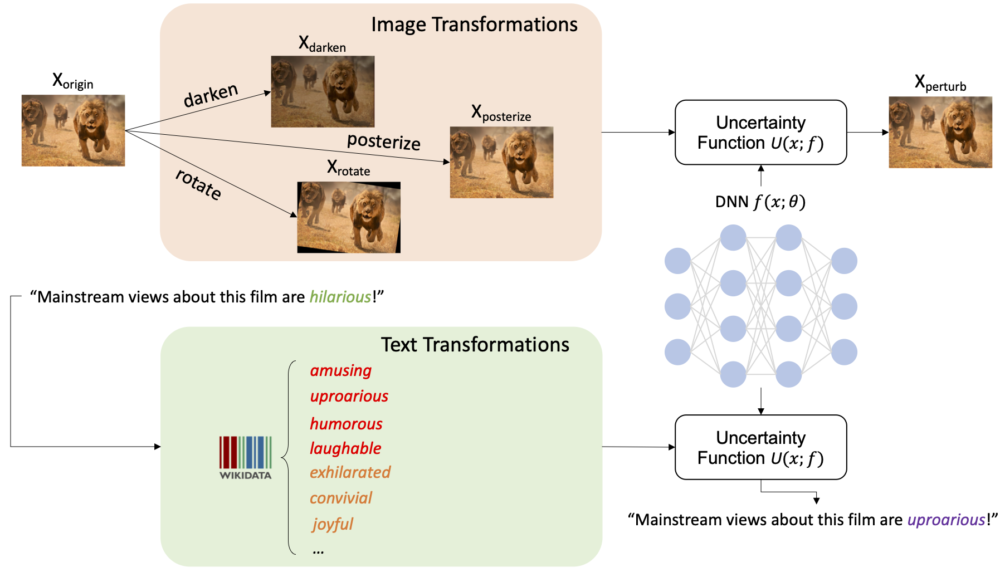
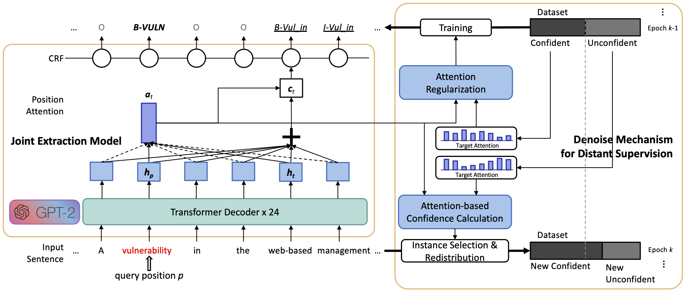
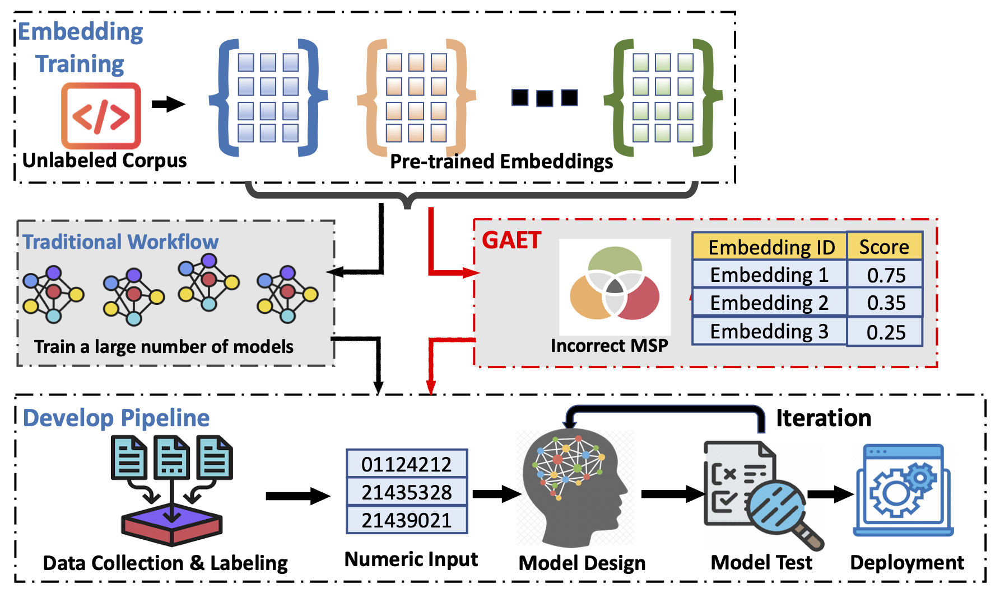
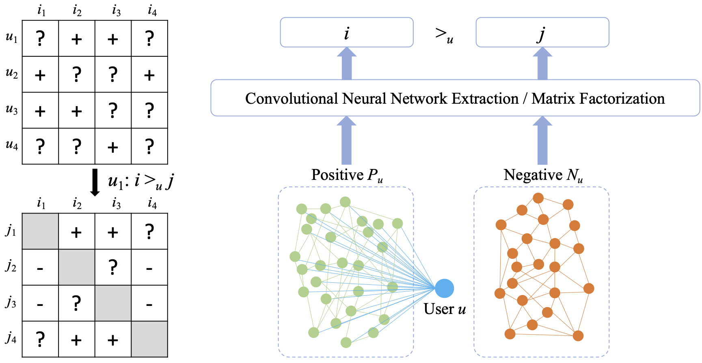
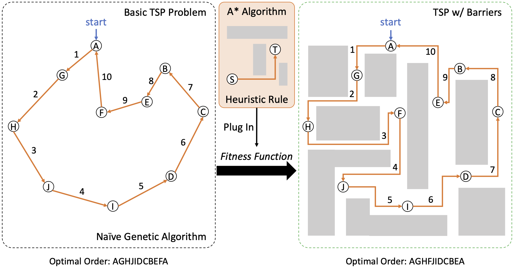
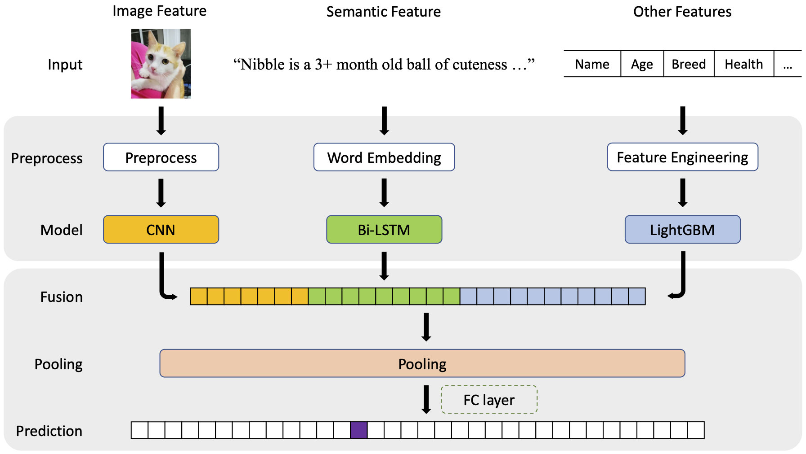

|
I am a 3rd-year Ph.D. student in Electrical Engineering at University of California, Riverside (UCR).
I conduct research at the intersection of natural language processing (NLP) and intelligent systems.
I'm interested in application of NLP and uncertainty estimation in data mining as well as robotics.
Email
| CV
| Google Scholar
| GitHub
| LinkedIn
|
Publications (* denotes equal contribution)
|
RT-LM: Uncertainty-Aware Resource Management for Real-Time Inference of Language Models [pdf]
Yufei Li, Zexin Li, Wei Yang, Cong Liu
IEEE Real-Time Systems Symposium (RTSS) 2023
|
|
R^3: On-device Real-Time Deep Reinforcement Learning for Autonomous Robotics [pdf]
Zexin Li, Aritra Samanta, Yufei Li, Andrea Soltoggio, Hyoseung Kim, Cong Liu
IEEE Real-Time Systems Symposium (RTSS) 2023
|
|
PIMbot: Policy and Incentive Manipulation for Multi-Robot Reinforcement Learning in Social Dilemmas [pdf]
Shahab Nikkhoo, Zexin Li, Aritra Samanta, Yufei Li, Cong Liu
IEEE/RSJ International Conference on Intelligent Robots and Systems (IROS) 2023
|
|
Uncertainty-Aware Bootstrap Learning for Joint Extraction on Distantly-Supervised Data [pdf]
Yufei Li, Xiao Yu, Yanchi Liu, Haifeng Chen, Cong Liu
Annual Meeting of the Association for Computational Linguistics (ACL) 2023
|
|
White-Box Multi-Objective Adversarial Attack on Dialogue Generation [pdf | code]
Yufei Li, Zexin Li, Yingfan Gao, Cong Liu
Annual Meeting of the Association for Computational Linguistics (ACL) 2023
|
|
SHARE: a System for Hierarchical Assistive Recipe Editing [pdf | code]
Shuyang Li, Yufei Li, Jianmo Ni, Julian McAuley
Conference on Empirical Methods in Natural Language Processing (EMNLP) 2022
|
|
GLIB: Towards Automated Test Oracle for Graphically-Rich Applications [pdf | code]
Ke Chen*, Yufei Li*, Yingfeng Chen, Changjie Fan, Zhipeng Hu, Wei Yang
ACM Joint European Software Engineering Conference and Symposium on the Foundations of Software Engineering (ESEC/FSE) 2021
|
|
Work Experience
NEC Laboratories America, Inc., Princeton, NJ, U.S.
Research Intern • May 2022 - Aug 2022
Annotated fields (name entities) in raw system log datasets and applied prompt-based seq2seq BART for extracting fields
Defined hierarchical relationships between fields and configured dynamic attributed graphs for feature representations
Proposed a temporal-attentive graph edge anomaly detection method for inferencing abnormal relationships in log messages
|


|
NEC Laboratories America, Inc., Princeton, NJ, U.S.
Research Intern • Jun 2021 - Aug 2021
Annotated name entities and relations with regular expression rules on CVE texts for distant supervision
Incorporated the pre-trained GPT-2 backbone into a sequence labeling framework for joint entity & relation extraction
Proposed a bootstrap training procedure for denoising distant labels and selecting high-quality instances
|
|
SeekTruth Scientific and Technical Corporation, Beijing, China
Research Intern • Jul 2019 - Sep 2019
Boosted an adaptive discrimination definition model for objection detection
Designed a lightweight CNN model for identifying the direction of videos
Built a joint key point & pose recognition model for character detection
|

|
|
Projects

|
Enhance the Reliability of Deep Networks on Out-of-distribution Data
NLP & CV • Sep 2021 - Present
Perturbing the text inputs from unknown distribution via synonym substitutions to yield trustworthy predictions
Boosting the CNN model confidence of test inputs through label-preserving image transformations
|

|
Low-Resource Joint Entity and Relation Tagging with Distant Supervision
NLP & Data Mining • Sep 2021 - Present
Identifying the instance quality as the explainability of models’ position attention distribution
Proposing a data redistribution schema to dynamically train on weakly labeled data
|

|
GAET: Assessing the Reusability of Pre-trained Code Embeddings
NLP & SE • Sep 2020 - May 2021
Proposed a low-cost offline metric for evaluating the generalizability of code embedding in SE downstream tasks
Patched the generalizability of existing pre-trained embedding based on the semantic metamorphic relationship
|

|
Rethink Negative Sampling in Bayesian Personalized Ranking
Data Mining & Recommender Systems • Nov 2019 - Jun 2020
Analyzed one limitation of the popularity-based sampling scheme in terms of non-uniform negative sampling bias
Corrected the bias and designed related negative sampling distributions to boost the Bayesian personalized ranking (BPR)
|

|
Automatic Delivery Vehicle Design
Path Planning • Mar 2019 - Jun 2019
Incorporated the Courier and TSP travel agent problems into designing autonomous delivery vehicles
Designed a path planning algorithm by incorporating the A* heuristic rules into the genetic evolution
|

|
How Cute Is My Pet? Pet Adoption Speed Prediction
NLP & CV • Jan 2019 - Mar 2019
Parsed and tokenized the description text of pets, encoded the semantic features with BiLSTM
Designed a joint framework to fuse the image feature, semantic feature, and other properties for pet popularity prediction
|
|
Honors & Awards
VEX Robotics International Competitions
Excellent award and runner-up in VEX Robotics World Championship 2017, Louisville, KY, U.S.
Excellent award and runner-up in VEX Robotics Asia Open 2016, Beijing, China
First-class honor in VEX Robotics China Open 2016, Xi'an, China
|

|
Scholarship Awards
National encouragement scholarship 2015-2017
|
|
|
|
Program Committee & Reviewer
|
|